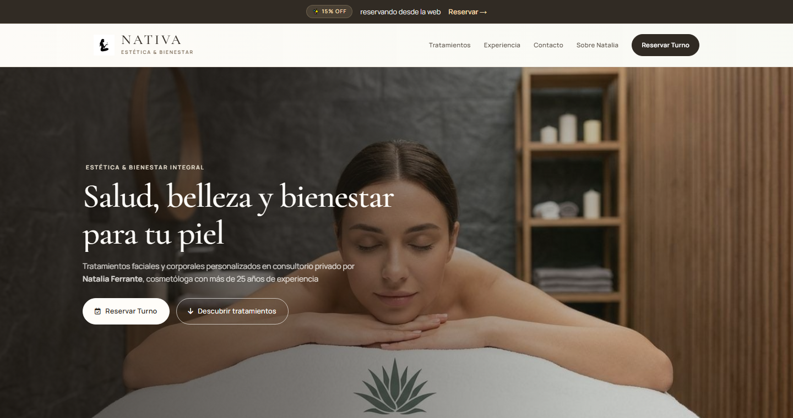

Crear una web desde cero
Si hoy trabajás con redes, WhatsApp o recomendaciones, podemos crear un espacio propio para presentar tu propuesta, servicios, formas de contacto e información importante.
DISEÑO WEB
Una buena web no tiene que ser complicada: tiene que explicar con claridad qué hacés, generar confianza y facilitar que una persona se contacte con vos.
En NODO diseñamos páginas web para negocios y profesionales que necesitan ordenar su presencia digital, mostrar servicios, recibir consultas o dar un paso más con una web que acompañe su trabajo real.
No partimos de una plantilla cerrada ni asumimos que todos los negocios necesitan lo mismo. Primero entendemos qué hacés, qué tenés hoy y qué necesitás resolver.
Si hoy trabajás con redes, WhatsApp o recomendaciones, podemos crear un espacio propio para presentar tu propuesta, servicios, formas de contacto e información importante.
Si ya tenés una página pero quedó desactualizada, no explica bien tu trabajo o no acompaña la forma en que hoy atendés, revisamos qué conviene conservar, ordenar o replantear.
Algunas webs necesitan turnos, catálogo de productos, formularios más claros, páginas de servicios o una mejor conexión con WhatsApp. Definimos esas necesidades antes de construir.
El alcance se define según el proyecto. Una web puede ser simple y directa o incluir más secciones y herramientas si el negocio lo necesita.
No todo tiene que estar incluido. La idea es construir lo necesario para que la web tenga sentido para tu negocio, no sumar funciones porque sí.
Esta propuesta está pensada para personas y equipos que necesitan explicar mejor lo que hacen y dar un lugar claro a sus consultas.
Consultorios, estudios, especialistas, oficios y servicios que necesitan presentar su forma de trabajo, especialidades y vías de contacto.
Negocios que quieren mostrar productos, categorías, promociones, medios de pago o formas de compra y consulta.
Actividades donde la imagen, los servicios, los horarios y la reserva o consulta directa ayudan a decidir con más información.
Equipos que necesitan una presencia más profesional para presentar su oferta, captar consultas o acompañar su operación comercial.
PROYECTO REAL
NATIVA Estética es un proyecto real de NODO.
El trabajo consistió en construir una presencia digital clara para presentar servicios, información del espacio y contacto en una experiencia simple, rápida y adaptable a celular.
El objetivo no fue cargar la página de elementos, sino ayudar a que una persona entienda qué ofrece NATIVA y pueda avanzar hacia una consulta.
Ver proyecto NATIVA Estética
Conversamos sobre tu negocio, tu público, lo que ya tenés y lo que te gustaría mejorar. No necesitás llegar con una solución técnica definida.
Antes de empezar, acordamos qué vamos a construir, qué materiales necesitamos, qué etapas incluye y qué tiempos son razonables para el proyecto.
Trabajamos sobre la forma de contar lo que hacés, priorizando información clara, jerarquías simples y una experiencia cómoda desde el celular.
Revisamos el resultado según lo acordado, dejamos el dominio a tu nombre y acompañamos la publicación para que la web quede lista para usar.
UBICACIÓN Y MODALIDAD
NODO trabaja desde Lomas de Zamora, Buenos Aires. Podemos coordinar encuentros presenciales en Zona Sur y CABA cuando el proyecto lo necesita, y también trabajar de forma remota mediante videollamadas.
La ubicación no cambia la forma de trabajo: primero entendemos el negocio, definimos el alcance y mantenemos una comunicación directa durante el proyecto.
PREGUNTAS
Lo importante para decidir con más claridad antes de empezar.
No. Podemos empezar desde cero o revisar una web existente para definir qué conviene mejorar.
Una landing suele concentrarse en una propuesta o acción puntual. Un sitio web puede reunir más secciones, servicios e información. La elección depende de lo que el negocio necesita explicar.
Sí, cuando tiene sentido para el proyecto. Primero evaluamos la forma más clara de resolverlo según cómo trabajás hoy.
La web puede construirse con una base técnica y de contenido clara para que los buscadores entiendan qué ofrecés. No prometemos posiciones ni resultados específicos en Google.
No necesariamente. Si ya tenés material, lo organizamos. Si falta algo, te indicamos qué conviene reunir y cómo resolverlo.
No. Estamos en Lomas de Zamora, trabajamos con proyectos de Zona Sur y CABA, y también de forma remota.
Contanos qué hacés y qué te gustaría lograr. Podemos orientarte antes de definir una propuesta.
Contanos qué hacés, qué tenés hoy y qué te gustaría mejorar. No necesitás saber de diseño, desarrollo o tecnología para empezar: vemos juntos qué opción tiene sentido para tu proyecto.